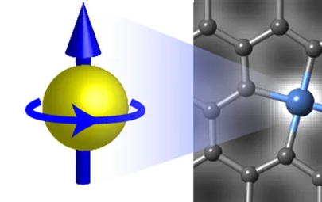
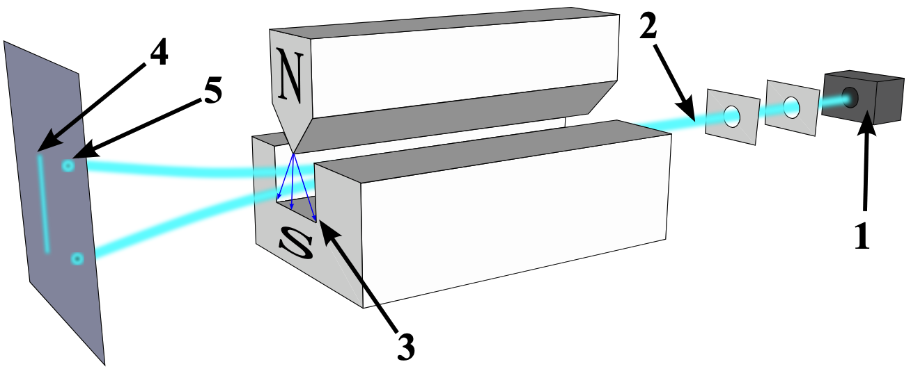

Lecture 2: From Bits to Qubits#
Warning
These lecture notes are a work in progress and are not a replacement for watching the lecture video, it’s intended to be a supplementary reading after watching the lecture.
Learning outcomes
In this lecture we introduce what a quantum state is through the Stern Gerlach experiments. We use the lessons from the experiment to introduce quantum states, and specifically how does a description of qubit looks like.
We touch upon the necessary mathematical framework for defining and and interpreting a qubit’s state.
We discuss quantum measurement, and how operators change qubit’s state.
We also describe how quantum measurement is used in computation, and what quantum computing workflow looks like.
Lastly, we establish a basic visual framework of quantum circuits, and identify that quantum gates are essentially linear operators.
Introduction#
Let us take a dive into the the fundamental unit of quantum computing, namely Qubit, and underlying mathematical ingredients. Later, in the lecture we learn how to manipulate qubits using Gates for basic computations, and the mathematical framework containing it. Our primary goal today is to get comfortable with the fundamental building block of a quantum computer: the qubit. We’ll look at what it is, and we’ll build up just enough of the mathematical framework so you understand how it behaves. We’ll also learn how to manipulate these qubits to actually compute things.
This note is largely divided into two parts
Qubits and Quantum state
Quantum Gates
Recap: Bits and Gates#
To truly appreciate what makes a qubit so special, we first need to quickly remind ourselves how our everyday, classical computers work.
We already know that classical computation is built entirely on two things: bits and gates.
A bit is the simplest piece of information in the universe. It is a simple binary choice—it
carries either a 0, or a 1. Think of it like a light switch that is strictly off or on.
Bits carry binary informations: 0, or 1 that gates manipulate, to perform computation.
Of course, a single bit doesn’t do much. But as we group multiple bits together, the amount of data we can work with grows.
Having multiple bits rapidly increases the input data we can work with, as \(N\) bit combinatorially
contains \(2^N\) binary data. See table below:
No |
size |
Permutations |
|---|---|---|
1 |
2 |
|
2 |
4 |
|
3 |
8 |
|
… |
… |
… |
As you can see in the Table 1, 2 bits give us 4 possible combinations. 3 bits give us 8 combinations, and it scales up from there. Now, to actually process this data, we send these bits through classical logic gates. These gates do something very straightforward: they either flip a bit, or they leave it alone, depending on a set of rules.
The entire mathematical framework behind this is called Boolean algebra. It’s the logic that powers simple operations, like the ‘AND’ gate you see below. It is highly predictable, strictly binary, and it’s the foundation of all classical software.
But as we will see, the quantum world plays by a completely different set of rules.
Preview: Qubits and Quantum Gates#
Now, let’s step into the quantum paradigm.
Instead of classical bits and gates, the corresponding object in quantum computing are Qubits and Quantum Gates.
Think of a classical bit like a coin sitting flat on a table—it’s either heads or tails. A qubit is like a spinning coin.

Fig. 3 A spinning coin#
While it’s spinning, it exists in a blur, holding the possibility of being heads and tails at the exact same time. Because of this, when you link qubits together, the processing power doesn’t just increase—it explodes exponentially.
As you can see in the Table 2, a classical computer walks down one path at a time. A quantum computer can walk down every possible path instantly.
Items |
Classical Capacity |
Quantum Capacity |
|---|---|---|
1 |
1 option out of 2 |
Both options simultaneously |
2 |
1 option out of 4 |
All 4 options explored together |
3 |
1 option out of 8 |
All 8 options explored together |
… |
… |
… |
\(n\) |
1 option out of \(2^n\) |
All \(2^n\) options explored together |
… |
One path at a time |
Every possible path instantly |
To manipulate these qubits, we use Quantum Gates. Instead of just flipping a rigid switch, these gates act smoothly—like tilting that spinning coin to favor one outcome over another.
The Quantum Paradigm Shift
We are blending possibilities together, rather than just crunching on/off logic.
Because of this fluidity, our mathematical language has to change from basic Boolean algebra to Linear algebra.
And finally, instead of logic circuits, we draw out these operations using quantum circuits, which follow similar flow of operation from left to right.
Here is an example of an illustrative quantum circuit:
Classical vs Quantum Scaling#
Why does this fundamental shift matter? It all comes down to scaling. You’ve likely heard of Moore’s Law.
Moore’s Law”
It’s the classical computing trend where we just keep packing more and more microscopic transistors onto a chip. But we are hitting a physical wall. We can only make things so small before atomic interference ruins the chip.
Driven by physical miniaturization of transisters.
Linear increase in components yields linear growth in classical bits.
Main bottleneck: Thermal dissipation and atomic limits.
Quantum computing follows a different trajectory, often called Rose’s Law.
Rose’s Law
Because of how qubits hold multiple states, just adding a few more qubits exponentially grows the computer’s capacity. The main hurdle here isn’t physical space, but “noise”—keeping those delicate spinning coins from falling over before the calculation is done.
Driven by quantum coherence and entanglement.
Linear increase in qubits yields exponential growth in state space \(2^{n}\).
Main bottleneck: Quantum noise and error correction.
To put this immense power in perspective, look at this equation: to get the processing space of a handful of ‘n’ qubits, you would need two-to-the-power-of-‘n’ classical bits.
This table summarizes our crossroads: we are moving from linear, physical growth, into an era of exponential, quantum growth.
Dimension |
Moore’s Law (Classical) |
Rose’s Law (Quantum) |
|---|---|---|
Scale Metric |
Transistor Count |
Qubit Count (Physical/Logical) |
Growth Pattern |
Linear growth of components |
Exponential growth of state space |
Doubling Period |
~18 to 24 Months |
~12 to 18 Months |
Capability Metric |
Clock Speed & Instructions/Sec (Flops) |
Quantum Volume & Logical Error Rates |
Limiting Factor |
Quantum Tunneling (Physical Wall) |
Decoherence & Environmental Noise |
Stern Gerlach (SG) Experiment#
A foundational physics demonstration in 1922 by Otto Stern and Walther Gerlach, that proved the quantization of angular momentum.
So, how do we actually prove that a qubit exists in this weird, spinning state in the physical world? For that, we have to go back to 1922. Two physicists, Otto Stern and Walther Gerlach, set up a now-famous experiment.


They wanted to test the idea that atoms act like tiny, intrinsic magnets—a property we now call “spin”. They wanted to see exactly how these tiny magnets would react when pushed by a big, external magnet.
Tip
Atoms contain intrinsic tiny magnetic moment, called spin.
The experiment showed how they respond to external magnet.

SG experiment: Setup#
Let’s look at how they built this experiment. Following is the sketch of the experiment:
{kind=link}

Furnace
Beam of atoms
Magnetic field
classically expectation
observed result
First, the silver atoms are vapourised in a furnace and fired like a straight beam. Then beam of atoms passes through a strong magnetic field. This beam was shot directly through a very strong, uneven magnetic field. Finally, the atoms would hit a detection screen at the far end, leaving a mark where they landed.
The idea was that the magnetic field would deflect the atoms depending on their internal spin. But the pattern that actually appeared on that screen surprised everyone. It was the first experiment to show spatial quantusation, and it perfectly illustrates our quantum coin. Let’s see why.
SG Experiment: Expectation#
Prediction
Silver atoms possess random magnetic moments, which should result in a continuous smear across the detection screen.
Before they turned the machine on, classical physics made a very confident prediction. Since the silver atoms are bouncing around randomly inside that hot oven, their tiny magnetic spins should be pointing in every possible random direction. Because of that, as they pass through the magnet, they should be deflected by all sorts of random amounts.
Reasoning
The magnetic field is felt by each atom depending on its orientation, and deflects the atom accordingly.
Since spin orientations must be random from the oven, the scattering pattern should be spread out.
As you can see in the simulation, classical physics expected the atoms to just hit the screen in a giant, continuous smear. Random orientations in, smeared line out. It made perfect sense. But the quantum world had a massive surprise waiting for them.
SG Experiment: Reality#
Reality
Angular momentum is quantized. The beam splits into exactly two discrete orientations:
Spin
Up(\(\uparrow\)) and,Spin
Down(\(\downarrow\))
But here is what actually happened when they turned the machine on. Instead of a continuous smear, the beam split cleanly into exactly two distinct spots. Some atoms went straight up, and the others went straight down.
Nothing in between. Even though the atoms went into the magnet spinning completely randomly, the magnet forced them to pick a side. The measurement itself determined the reality.
Observation
Atom’s spin were in random orientation. The magnet Influenced the orientation. The screen detected the orientation.
Interpretation#
Let’s break down exactly why this is so weird, and what it means for us.
Let’s look closely at the atom’s
spin, and consider its direction as it passes from the oven, through the magnet, to the screen.In the oven the spins can point in every possible random direction, completely uncoordinated.
Yet, the moment they pass through the magnetic field, they don’t spread out into a continuous smudge; they deflect cleanly into two discrete paths.
Prior to detection, the spin had all possibilities of orientation, but the measurement forces it to collapse into just one configuration.
Outcomes of such measurements are quantised, descrete.
This collapse is fundamentally probabilistic: If we throw one atom at a time, it either goes up, or down.
After several such measurements, we map a distribution of up’s and down’s clicks on the screen.
The experiment revealed equal brightness between both dots: \(\longrightarrow\) equal probability of up or down.
Takeaway
Whatever mathematical language we use to program quantum computers, it has to have probability baked right into its core.
A Quantum State#
So how do we mathematically write this down? We use something called a “state.”
What is state?
A state is just a mathematical snapshot of a system. It is a mathematical descriptor that captures every detail of that system at a given instant.
For a classical system, this snapshot is expressed entirely through a fixed set of coordinates and properties.
Classical State#
Take an example of a single physical particle moving through space. We live in three dimensions, so we need three coordinates, say \((x, y, z)\) to specify its position, and three components of momentum \((p_x, p_y, p_z)\) or equivalently velocity to specify its motion.
Thus the exact state of the particle is locked into its position and its momentum. Measuring the location or speed simply reveals these pre-existing numbers.
Definition
The minimal set of numbers or quantities required to specify the position of a system is called its degrees of freedom.
Thus a particle moving in space has 3 degrees of freedom. If the particle also has finite geometry, a rigid body, then it has 6 degrees of freedom; three positional coordinates, and three rotational angles.
For each degree of freedom, there must be a corresponding component of momenta, or velocity to specify the motion. Together, they define the state of the system.
Quantum State#
But a quantum state is completely different. It’s fluid. It is literally a combination of potential outcomes before you measure it. A quantum state is sensitive to the measurement apparatus, existing as a fluid combination of potential measurement outcomes.
Since our experiment gave us Up and Down as distinct outcomes of our experiment, we write our quantum state as an abstract
blend of both possibilities.
For now we read it as: The state \(\psi\) equals \(\alpha\) times state Up plus \(\beta\) times state Down.
The values \(\alpha\) and \(\beta\) are weighting factors that control the likelihood of landing on a specific outcome.
If we square their absolute values, they reveal the physical probability of reading a state as
UporDown.
The necessity of complex weights#
Now, you might be wondering about those weights, alpha and beta. It’s incredibly tempting to just use regular, everyday numbers for them—like 0.5 or 0.8.
However, if we assumed, we will quickly learn how treating real numbers as weights becomes tricky. But very early on, physicists realized that using regular real numbers completely breaks down.
We illustrate this by doing a Lego like exercise with the SG experiment.
Multi-Axis Measurement Sequence#
Recall the SG setup. The magnet was oriented to deflect atoms along \(Z\) axis.
Let’s call this arrangement \(\text{magnet-}Z\), and the two outcomes \(|z+\rangle\) and \(|z-\rangle\).
Rotating the whole apparatus along \(X\) or \(Y\) axis, changes the beam to deflect along \(X\), or \(Y\) axes with outcomes \(|x\pm\rangle\) or \(|y\pm\rangle\)
Let’s run three SG experiments sequentially, in two ways.
{kind=link}

Fig. 4 SG experiment, Z-X-Z and Z-Y-Z pathways.#
In both the case, we get equal mixture of \(|z+\rangle\) and \(|z-\rangle\) towards the end.
The counterintuitive outcome#
When you actually run this experiment, two strange things happen, as illustrated by Fig. 4.
First, atoms that were strictly “Up” on the Z-axis somehow forget their orientation after passing through the second magnets When they hit the final Z-magnet, they split into Up and Down all over again!
The Reappearing State Paradox
A \(|z+\rangle\) state became an equal blend of \(|z+\rangle\) and \(|z-\rangle\) when passed through \(\text{magnet-}X\)/\(\text{magnet-}Y\).
How did \(|z+\rangle\) in both cases, got mixed with \(|z-\rangle\)?
Second, and more importantly for our math: if we try to write the equations for the X pathway and the Y pathway using only regular real numbers, the equations end up looking exactly identical. somehow both \(|x+\rangle\) and \(|y+\rangle\) states are equal blend of \(|z+\rangle\) and \(|z-\rangle\) states!
Incomplete description
In the \(Z-X-Z\) pathway, the \(|x+\rangle\) state is an equal blend of \(|z+\rangle\), and \(|z-\rangle\).
In the \(Z-Y-Z\) pathway, the \(|y+\rangle\) state is an equal blend of \(|z+\rangle\), and \(|z-\rangle\).
But physically, they are completely different setups!
Using only real numbers (\(+\) or \(-\)), we cannot write mathematically unique descriptions for both \(X\) and \(Y\) states.
Regular, or real numbers just don’t give us enough dimensions to uniquely describe reality. To see this, we note that the experiment we ran could be oriented along any one of the three independent axes in three dimensions. But since the probababilities sum to 1, we have a constraint. Say the probability is some function P of the weights, i.e., \(P(\alpha)\). Then the constraint is
Now if the \(\alpha\) and \(\beta\) are real numbers, we have two parameters and one probability constraint.
Which gives us one free parameter that one can vary to change the description of state. But in three dimension,
orientational freedom is parameterised by minimum two parameters. More can be okay, but not less.
That is why we use complex numbers, as each complex number is a two parameter object. Let’s look at how complex numbers solve this.
Definition
A Complex number \(z\) consists of two part, a real part and an imaginary part: \(z = x + iy\) where \(i=\sqrt{-1}\) is the imaginary number. \(x, y\) are two real number that collectively define a complex number.
Thus complex numbers provide the extra geometric dimension needed to uniquely represent independent physical directions. Next, let’s consider the probability function P(alpha). It can be mathematically established that it needs to scale with square of the magnitude of the coefficients: \(P(\alpha) \propto \alpha^2\) .
Decoding the Coefficients#
The values \(\alpha\) and \(\beta\) are weighting factors that control the likelihood of landing on a specific outcome.
If we square these numbers, they reveal the exact physical probability of reading a state as
UporDown.And because the atom has to land somewhere, the total probability always has to add up to exactly 1, or 100%.
Mathematically, this means sum of their norm squared is always:
If we forced these weights to be regular numbers, we’d be stuck with those identical equations for the X and Y paths.
Complex numbers have magnitude and phase, which gives the necessary detail in description to distinguish the above two states. In fact the actual expression for the state is:
Dirac Notation#
To keep all this math tidy, we use a special shorthand called Dirac notation, or Ket notation.
Dirac, or Ket notation expresses a quantum state as \(\color{red}|\text{descriptor}\rangle\) where the “descriptor” is something that describes the measurement outcome. It’s just a vertical bar, a word, and an angled bracket. The word inside describes the outcome.
In case of spin, there were two outcomes, so corresponding states are expressed as \(|\text{Up}\rangle\), and \(|\text{Down}\rangle\)
These states are special. They are called Basis States for the given measurement.
A generic state is expressed as linear combination of the Basis states with complex coefficients.
And here is the big reveal: any quantum system where a measurement gives you exactly two possible outcomes is what we call a “qubit.”
Definition
A Quantum system, in which the measurement gives only two outcomes, is identified as a qubit.
If a system has more than two outcomes, we just add more kets to the equation. In general, the measurement of a more complex system can yield several descrete outcomes: \(o_1, o_2, o_3, ...\), then the state would be expressed as
Defining the Qubit#
Recall, for the \(n\)-th time (😃), the two outcomes in SG experiment were up and down.
In a different quantum experiment they could be any two different exclusive outcomes.
We standardise the two outcomes as 0 and 1 states, or \(\mathbf{|0\rangle}\), and \(\mathbf{|1\rangle}\).
So a qubit state is expressed as following:
where \(\alpha, \beta\) are complex numbers.
\(\alpha, \beta\) are also called probability amplitudes as their magnitude squared gives the probability.
These coefficients represent different orientation possibilities before the measurement.
They represent the orientation of our spinning quantum coin right before we force it to stop and show us a 0 or a 1.
Definition
The \(\{|0\rangle\), \(|1\rangle\}\) set is called computational basis, and forms the building block of quantum computing, and quantum information.
The State vector#
So now we have a ket expressed in terms of the computational basis, in which all the freedom to change is embeded in the coefficients \(\alpha\) and \(\beta\). So we choose a representation for the state where this becomes self evident and clearer. That is done by using vectors and matrices, as it makes computation and visualisation straight forward.
So the general single-qubit can be expressed as a column vector \((\alpha, \beta)\).
Thus, the state \(|0\rangle\) is a column vector with 1 on top and 0 on the bottom. The state 1 is the reverse. Deploying the usual matrix algebra, a generic qubit state can be written as
This means our generic qubit is just a vector with our \(\alpha\) and \(\beta\) as their component, which are complex numbers.
Since complex numbers are expressed in terms of magnitude and phase, we can express
Where \(r_1, r_2\) are their magnitudes, and \(\phi_1, \phi_2\) their phases. By factoring out some shared numbers and using a bit of algebra, the state becomes
The term \(e^{i\phi_1}\) is overall phase, so we assume \(\phi_1 = 0\), and choose \(\phi_2 = \phi\).
The probability must sum to 1, so we require \(|\alpha|^2 + |\beta|^2 = 1\), or \(r_1^2 + r_2^2 = 1\).
This constraint gives us single parameter, and we write
We can boil all of this down to just two meaningful variables: two angles, which we call \(\theta\) and \(\phi\).
Why is this amazing? Because two angles \((\theta, \phi)\) are exactly what you need to point to any specific spot on the surface of a sphere. This means we can visualize any qubit, with all its complex math, as a single point on a 3D globe.
Let’s discuss that next and see how.
The Bloch Sphere#
Spherical Parametrisation
\(\theta \in [0, \pi]\) — polar angle (latitude)
\(\phi \in [0, 2\pi)\) — azimuthal angle (longitude)
With these \(\theta\) and \(\phi\), there is 1-to-1 correspondence between the state \(|\psi\rangle\) and a point on unit sphere. This simply means that for a given \((\theta,\phi)\), there is a unique point \({\bf p}(\theta,\phi)\) on unit sphere, and a state \(|\psi (\theta,\phi)\rangle\).
Definition
When we visualise the states
on unit sphere, it is called Bloch Sphere.
Think of the Bloch Sphere exactly like a globe. Theta is your latitude, and Phi is your longitude. Every single valid quantum state corresponds perfectly to one specific point on the surface of this sphere.
Below is an animation of how the state moves on Bloch sphere as \(\theta, \phi\) change. You can interact with this visualization by clicking and dragging to rotate the coordinate system.
Below is the path that the animation takes on the Bloch sphere.
Our standard starting point, \(\lvert0\rangle\), starts at the North Pole.
Then it goes vertically down onto the equator on the x-axis, \(\lvert+\rangle\). This is a perfectly balanced 50/50 blend of 0 and 1.
Then it rotates horizontally across phases, till y-axis: \(\lvert+i\rangle\). This is another 50/50 blend, but with phase \(i\).
Finally, it goes down cleanly to the South Pole: \(\lvert1\rangle\).
Key Reference States#
Because Bloch sphere is vital for visualising, there are a few landmark locations we use all the time.
State |
\(\theta, \phi\) |
Sphere Position |
|---|---|---|
\(\vert0\rangle\) |
\(0,\,*\) |
North Pole \(+z\) |
\(\vert 1\rangle\) |
\(\pi,\,*\) |
South Pole \(-z\) |
\(\vert {+}\rangle = \frac{\vert 0\rangle + \vert 1\rangle}{\sqrt{2}}\) |
\(\pi/2,\,0\) |
\(+x\) equator |
\(\vert{-}\rangle = \frac{\vert 0\rangle - \vert 1\rangle}{\sqrt{2}}\) |
\(\pi/2,\,\pi\) |
\(-x\) equator |
\(\vert{+i}\rangle = \frac{\vert 0\rangle + i\vert 1\rangle}{\sqrt{2}}\) |
\(\pi/2,\,\pi/2\) |
\(+y\) equator |
\(\vert{-i}\rangle = \frac{\vert 0\rangle - i\vert 1\rangle}{\sqrt{2}}\) |
\(\pi/2,\,-\pi/2\) |
\(-y\) equator |
Overlap, Measurement#
Let’s define a few terms.
First, we have the “Ket”. This is what we’ve been using so far. It’s simply a column vector that represents our quantum state. Second, we have its mirror image: the “Bra”. This is a row vector. To get a Bra, you just take your Ket, lay it flat, and flip the sign on any imaginary numbers. There is a one-to-one correspondence between a \(|\text{Ket}\rangle\) and \(\langle\text{Bra}|\). Its easy to see that they are conjugate of each other: \(\qquad\Large\langle \psi|^\dagger = (|\psi\rangle^\dagger)^\dagger = |\psi\rangle\).
Ket |ψ⟩ — State Vector
Column vector: representing a quantum state.
Bra ⟨ψ| — Dual Vector
Row vector: the conjugate transpose of its ket.
And they are conjugates of each other, Any one of these can be used to define the quantum state. But why do we need both? Mathematically, a bra actually represents a functional. Functionals are functions that act on a vector and return a number. Notice how a bra is expressed as a row vector, so if we multiply a bra with a ket from left, the equivalent operation on the corresponding vectors results in a number. Like a dot product. Let’s define it formally below.
Inner Product#
The inner product of two states is analogous to dot product of two ordinary vectors.
Definition
If \(|\psi\rangle = \begin{pmatrix}a_1\\ a_2\end{pmatrix}\), and \(|\phi\rangle = \begin{pmatrix}b_1\\ b_2\end{pmatrix}\), the inner product \(\langle \phi|\psi\rangle\) is defined as:
Note: It is easy to see that\(\langle\phi|\psi\rangle = \langle\psi|\phi\rangle^*\), i.e., changing the order of the vectors results in complex conjugate. We use this Inner Product for two big things. First, the “Norm”.
Definition
The Norm of a state represents it’s length, and is computed as the inner product of the state with itself:
If you take the inner product of a state with itself, you get its total length. Knowing norm is vital because probability must equal 100%, the length of a valid quantum state is always exactly 1.
The usual dot product, defines the angle between two vectors.
The inner product defines the notion of an angle between the state vectors.
But in quantum mechanics, this angle is interpreted as a measure of probability overlap, as opposed to directional overlap.
\(\langle\phi|\psi\rangle = 0\) means the two states are orthogonal in sense of angle (\(\theta = \pi/2\)). In terms of probability, it means that these states are mutually exclusive.
For examples, as \(\langle 0|1\rangle = 0\), this means the two states are mutually exclusive. If you are at the North Pole, there is a zero percent chance you are also at the South Pole.
Quantum Operators#
Okay, so we have our state vectors. But how do we actually do computing? We need a way to change the states. For that, we use Quantum Operators. Whenever you physically change a qubit, like applying a logic gate, you are applying a Linear Operator.
Once we define a qubit as a complex vector \(\vert\psi\rangle\), we need a way to model physical changes.
Any physical process evolving a qubit from state \(\vert\psi\rangle\) to a new state \(\vert\psi'\rangle\) is modeled as a Linear Operator \(\hat{A}\).
In practice, an operator is just a square matrix. It multiplies our state vector: \(\vert\psi'\rangle = \hat{A}\vert\psi\rangle\)
For a single qubit, these linear operators are represented simply as \(2\times 2\) complex matrices.
And just like our vectors had a mirror image, operators do too, called the Adjoint.
Definition
The Adjoint Operator
If an operator \(A\) acts on a column vector, its adjoint (or Hermitian conjugate) \(A^\dagger\) is the operator that acts on the row vector.
The Matrix Recipe: Flip the matrix over its diagonal (transpose) and change the sign of all imaginary numbers (complex conjugate).
The “Bra-Ket” Action: When moving an operator from a Ket to a Bra inside an inner product, it converts into its adjoint:
Basically, you just flip the matrix diagonally and change the signs on the imaginary numbers.
This Adjoint lets us easily shift our operators back and forth between our Bra and Ket puzzle pieces when we are doing calculations.
Operators in Action#
To understand how quantum operators affect state, let’s ask this: What does a matrix actually do to a state vector? When an operator hits a quantum state, it can do three things simultaneously.
In a complex vector space, a general operator \(\hat{A}\) transforms a state by doing three things:
Scaling: Stretching or shrinking the vector’s magnitude.
Rotating: Shifting the physical direction of the state.
Phase Shifting: Twisting the components into the complex plane.
Let’s illustrate this by a quick example. Let’s apply a general operator \(\hat{A} = \begin{pmatrix} 2 & 0 \\ 0 & i \end{pmatrix}\) to a balanced qubit state \(\vert\psi\rangle = \frac{1}{\sqrt{2}}\begin{pmatrix} 1 \\ 1 \end{pmatrix}\). When we multiply them together, we get a new state. Let’s decode what happened.
Look carefully at the final state that we got. We find three categorical changes.
1. Scale: The overall vector length is no longer 1, but stretched to \(1 \to \sqrt{2.5}\).
2. Rotation: The relative balance between \(\vert0\rangle\) and \(\vert1\rangle\) changed, and is higher towards \(\vert0\rangle\) axis (\(2\) vs \(1\)).
3. Phase Twist: The \(\vert1\rangle\) component gained an \(i\) factor (\(e^{i\pi/2}\)), or \(90^\circ\) into the complex plane relative to \(\vert0\rangle\).
This was intentionally chosen operator/matrix that does all three things, and a generic operator can do all three things. However, there are some categories of operators, that do only a subset of things like:
Only rotation, no scaling
Only scaling, no rotation
We discuss some of these special cases next, and see how they are relevant in quantum computing.
Eigenvalues & Eigenstates#
For any operator, there exist privileged, “anchor” directions called Eigenvectors (or Eigenstates). When an operator acts on its own eigenvector:
It cannot rotate it.
It cannot twist its relative phase.
It only scales its magnitude.
The Eigenvalue Equation
Mathematically, eigenvalues and eigenvectors are defined by following equation.
\(\vert \psi \rangle\) is the Eigenvector: The specific state whose physical direction remains completely unchanged by the operator \(\hat{A}\).
\(\lambda\) is the Eigenvalue: A simple scaler number (complex or real) that represents the exact factor by which the vector was stretched.
The Quantum Connection
When you measure a physical property (like spin), the quantum system doesn’t just pick a random direction. It always collapses into one of the measurement instrument’s specific eigenvectors (\(\hat{A}\)’s eigenvectors \(\vert \psi \rangle\)), and the instrument reads out its corresponding eigenvalue (\(\lambda\)).
Special Operators#
In quantum computing, there are two special types of operators that run the whole show, and we use them frequently in quantum science and computing.
Hermitian or Self Adoint operators
Unitary, probability preserving operators.
“Hermitian Operators: Measurements”
They satisfy \(H^\dagger = H\), which mathematically forces all of their outputs to be real numbers.
Every physical quantum measurement or detector screen is represented by a Hermitian matrix.
Because their outputs are real, they translate abstract math into readable laboratory metrics.
This is crucial. You can’t read an imaginary number off a computer monitor in a lab. Hermitian matrices force the abstract math to translate into a real-world, readable metric.
“Unitary Operators: Gates”
They satisfy \(U^\dagger U = I\), preserving the total \(100\%\) probability length of state vectors.
All physical quantum gates or timeline actions are mathematically represented by unitary matrices.
Because they conserve probability, these gate transformations can always be reversed in time.
Unitary operators represent our Quantum Gates. They are mathematically restricted to preserve probability at exactly 100%. They never stretch the vector, they only rotate it. Because no probability is lost, Unitary operations are perfectly reversible. You can always rewind your quantum code.
Quantum Measurement#
Let’s touch upon the quantum measurement a bit more formally.
Measurement Basis#
To measure a quantum system, we use a Hermitian operator \(\hat{A}\) representing an observable measurement.
The Outcomes: The operator’s eigenvalues (\(a_1, a_2, a_3..\)) are the only valid physical results we can read out.
The Basis: The corresponding eigenvectors (\(|a_1\rangle, |a_2\rangle, |a_3\rangle,..\)) form an orthonormal basis (\(\langle a_i|a_j\rangle = \delta_{ij}\)).
The Superposition: Before we look, the system exists as a blend of all possibilities:
The Act of Observation
When a measurement is performed, two things happen instantly:
1. Born’s Rule: The probability of getting outcome \(a_i\) depends strictly on the state’s overlap with that basis vector:
2. Wavefunction Collapse: The system abruptly forces itself into that single state \(|a_i\rangle\). All other branches vanish.
Demystifying Quantum Computation#
If you followed the lecture so far, you understand the core mechanics of Quantum Computing.
Quantum computing strips away the complex physics and treats this measurement framework as a programmable architecture.
The Qubit Baseline: If a system has exactly two measurement outcomes, we call its vectors the computational basis, labeled simply as \(|0\rangle\) and \(|1\rangle\).
The Hardware Pipeline: A quantum program follows three strict, mechanical phases:
The Mathematical Flow: We start at \(|0\rangle\), apply a cascade of rotation matrices, and produce a final engineered state \(|\psi\rangle\):
Mathematically, it’s just multiplying a starting vector by a sequence of matrices.
🎯 What is a Quantum Algorithm?
It is the art of choosing a specific sequence of unitary matrices (\(U_i\)) such that constructive interference boosts the probability (\(|\alpha_i|^2\)) of the correct answer, making it the most likely outcome to collapse upon measurement.
Quantum Operation#
Let’s do another walk-through with single qubit system.
Say a qubit is initially in state \(|\psi\rangle = \alpha_0 |0\rangle + \alpha_1 |1\rangle\).
When an external factor affect a system, we track the change by multiplying the Operator: \(U|\psi\rangle\).
For a sequence of three actions, the final state is calculated as: \(|\text{OUT}\rangle = U_3 \cdot U_2 \cdot U_1 \cdot |\psi\rangle\).
Initial State \(|\psi\rangle\) ➔ [ Action 1: \(U_1\) ] ➔ [ Action 2: \(U_2\) ] ➔ [ Action 3: \(U_3\) ] ➔ Final State \(|\text{OUT}\rangle\)
Below is the mathematical view, very similar to earlier.
The Mathematical View
Operations are applied as successive matrix multiplication on state vector.
The state vector is modified by \(U_1\) first, yielding \(U_1|\psi\rangle\).
Next, \(U_2\) acts on the resulting state from the left side
\[U_2 (U_1|\psi\rangle) = U_2U_1|\psi\rangle\]Then \(U_3\) acts on the resulting state from the left side
\[U3 (U_2 U_1|\psi\rangle) = U_3U_2U_1|\psi\rangle\]
Below is how we interpret it physically.
The Physical Interpretation
Each operator acts as a local physical manipulation environment.
It could represent a particle passing through three successive magnets.
It could also represent a single qubit hit by three timed radar pulses.
The compound effect steers the probability weights across space.
Quantum operation vs. Quantum Circuits#
Recall how successive operators apply on a state from right to left, closest to the starting state vector \(|\psi\rangle\).
A quantum circuit, is a visual layout, where we replace the equations with clean, horizontal flow or wire grids.
The Unitary operators applied on the state are visualised as gates.
Let’s look at how a three-step algorithmic chain maps across these two alternative views.
The Equation View
Operations are ordered as nested functions, reading right to left:
The state vector is modified by \(U_1\), then \(U_2\), and finally \(U_3\).
While compact, tracking long chains of text quickly becomes a dense reading bottleneck.
A measurement involves computing the overlap of the modified state with initial one. $\(\langle\psi|\text{OUT}\rangle = \langle\psi|U_3 \cdot U_2 \cdot U_1 \cdot \lvert\psi\rangle\)$
The measured outcomes is the squared magnitude: \(|\langle\psi|\text{OUT}\rangle|^2\)
The Circuit View
We compress this exact sequence into a single timeline wire flowing left to right:
The line represents the timeline, and each block maps to an action in the lab.
This format allows us to read complex cascades sequentially without tracking formulas.
Single qubit Gates#
Hadamard Gate#
First is the Hadamard Gate, arguably the most important gate in quantum computing. This is the gate that creates superposition. If you feed it a rigid State 0, it blends it into a perfectly balanced 50/50 probability wave.
On the Bloch sphere, it grabs the North Pole and pulls it directly down onto the equator. This is the spark of quantum parallelism. It takes a boring, deterministic bit and turns it into an active quantum state that explores multiple paths at once.
Hadamard (Superposition)
Blends the basis states into a balanced, equal probability configuration.
Acts as a symmetric reflection operator to create or undo splits:
The primary tool used to boot up quantum parallelism inside an algorithm.
Physically maps the poles of your state sphere straight down onto the equator.
It transforms a fixed deterministic switch into an active probability wave.
Pauli-X Gate#
Next is the Pauli-X Gate. This is the closest thing we have to a classical NOT gate. It is a straight bit-flip. It completely swaps State 0 and State 1. If you look at the matrix math, it simply inverts the top and bottom numbers of your state vector. Physically, on the Bloch Sphere, this is a 180-degree rotation straight over the top. We usually use this at the beginning of a program to flip a qubit from zero to one so we have something to work with.
Pauli-X (Bit Flip)
Swaps the basis states completely: \(\lvert0\rangle \leftrightarrow \lvert1\rangle\).
Inverts the probability weights of your single-column state vector:
The physical analogue of a classical NOT gate or digital bit-flip operation.
In the laboratory, it acts as a perfect \(\pi\) rotation directly around the \(X\)-axis.
It is primarily used to initialize registers or flip target control channels.
Pauli-Y Gate#
Think of the Y gate as the ultimate multitasker. It applies a bit flip AND a phase flip at the exact same time. Because it involves that phase flip, it injects the imaginary unit ‘\(i\)’ directly into our state vectors. If you look at our Bloch sphere globe, the Y axis is the one pointing straight out of the screen at you. The Y gate is a perfect 180-degree spin around that specific axis. It takes standard, real-number states and completely twists them into the complex plane.
Pauli-Y (Bit and Phase Flip)
Applies a simultaneous bit flip and a complex phase twist.
Inverts the probability weights and multiplies by the imaginary unit \(i\):
It is mathematically equivalent to combining both the \(X\) and \(Z\) gates into a single operation.
In the laboratory, it acts as a perfect \(\pi\) rotation directly around the \(Y\)-axis on the Bloch sphere.
It takes states lying on the standard \(X\)-\(Z\) plane and twists them out into the complex \(Y\) dimension.
Pauli-Z Gate#
Next, we have the Pauli-Z Gate. This is called a Phase Flip. It doesn’t change the physical probabilities—if it was a 50/50 split before, it stays a 50/50 split. But it flips the mathematical sign on State 1. On our globe, this is a 180-degree horizontal spin right around the equator. This internal phase shift is absolutely vital for setting up interference patterns later in an algorithm, allowing us to cancel out wrong answers.
Pauli-Z (Phase Flip)
Flips the relative sign of the target state: \(\lvert1\rangle \rightarrow -\lvert1\rangle\).
Negates the complex amplitude of the lower vector coefficient slot:
Reverses the internal timing alignment without changing the raw probability.
In the laboratory, it triggers a clean \(\pi\) rotation right around the vertical \(Z\)-axis.
Essential for controlling interference patterns and marking correct search options.
S Gate#
Next is the S Gate. If the Z-gate was a 180-degree spin around the equator, the S Gate is exactly half of that: a 90-degree quarter turn. Because it stops halfway, it injects an imaginary number—an ‘i’—into our state vector. It is literally the mathematical square root of the Z-Gate. It shifts our states smoothly between the standard real axes and the complex imaginary axes on our sphere.
S Gate (Quarter Turn)
Advances the complex phase angle of the \(\lvert1\rangle\) component by exactly \(90^{\circ}\).
Injects the imaginary unit coefficient into the matrix equation:
Known as the Phase Gate, it acts as the exact mathematical square root of \(Z\).
Performs a fractional \(\pi/2\) horizontal rotation across the equatorial map.
Used to shift vectors between the standard \(X\)-basis and the complex \(Y\)-basis.
T Gate#
Finally, we have the T Gate. This goes one step smaller. It is an eighth of a turn, advancing the phase by exactly 45 degrees. It is the square root of the S Gate. While a 45-degree rotation might sound arbitrary, it is incredibly important. Without the T Gate, you cannot build a universal quantum computer capable of running complex, error-corrected algorithms. It is the final piece of our basic toolkit.
T Gate (Eighth Turn)
Advances the phase angle of the \(\lvert1\rangle\) component by exactly \(45^{\circ}\).
Introduces an Euler exponent multiplier into the complex matrix:
Known as the \(\pi/8\) gate, it acts as the mathematical square root of \(S\).
Performs an incremental \(\pi/4\) rotation around the vertical tracking line.
Absolutely critical for building universal fault-tolerant computation compilers.
Rotation Gates (\(R_x, R_y, R_z\))#
Up until now, every gate we’ve looked at has been fixed. A 180-degree flip, a 90-degree turn, a 45-degree turn. But what if you want to rotate your state by exactly 12 degrees? For that, we use Parameterized Rotation Gates—specifically \(R_x, R_y\), and \(R_z\). Instead of fixed numbers, these matrices use sine and cosine functions that accept any custom angle, which we call Theta. Instead of a strict light switch, think of these as smooth volume dials. You can dial in the exact orientation you want along any of the three axes. While we won’t dive too deep into them yet, these continuous dials are the secret sauce behind modern quantum machine learning, where classical computers constantly tweak these angles to find the best possible algorithmic answers.
Continuous Rotations
Allows for arbitrary, fine-tuned rotations by a custom angle \(\theta\).
Generalizes the fixed flips into smooth, continuous matrix functions:
Unlike the Pauli gates which are strict \(180^{\circ}\) flips, these act as continuous tuning dials.
We can define independent \(R_x, R_y,\) and \(R_z\) gates for all three spatial dimensions.
Absolutely essential for variational quantum algorithms, where angles are updated continuously by an optimizer.
Summary#
We took a massive leap. We moved from the classical world of rigid bits into the quantum world of fluid probabilities. We looked at the Stern Gerlach experiment to prove that quantum states are real, and we learned how to map those states using vectors, complex numbers, and the Bloch Sphere. We then built a framework for operating on these states using Unitary matrices, and we looked at the fundamental gates that make up a quantum circuit.
You now have the mathematical and visual vocabulary to understand what a qubit is, how we manipulate it, and the basic workflow of a quantum program. In our next lecture, we are going to take these individual qubits and link them together to explore entanglement and multi-qubit systems.
References#
The following references are optional reading material:
The following chapters of the textbook Introduction to Classical and Quantum Computing(pdf) : 1.1, 1.2, 1.3, 2.2, 2.3, 2.6, 4.4